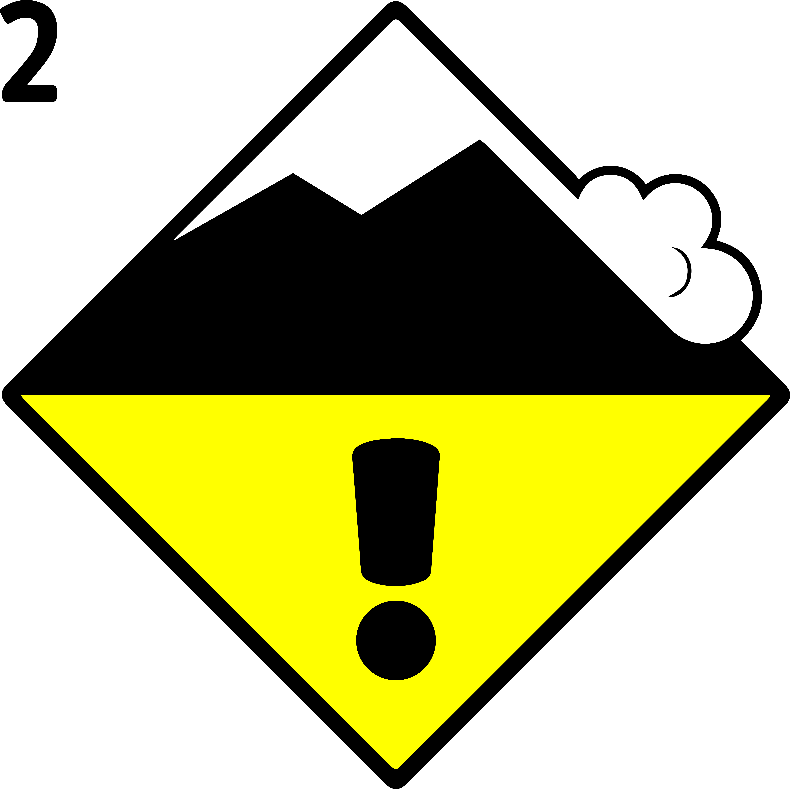

Bulletin d'avalanche

Niveau de danger: limité (2-)
 Neige soufflée
Neige soufflée

Plage d'altitude: à plus de 2400m
Exposition: N, NE, E, SE, NO
Gefahrenbeschrieb: Des accumulations de neige soufflée bien visibles se sont formées avec le vent partiellement fort dans les derniers jours en altitude. Celles-ci sont plutôt petites mais en partie fragiles.
Les accumulations de neige soufflée devraient être évaluées avec prudence en terrain très raide.
Dernière mise à jour: 05.01.2026, 08:17